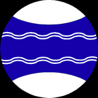
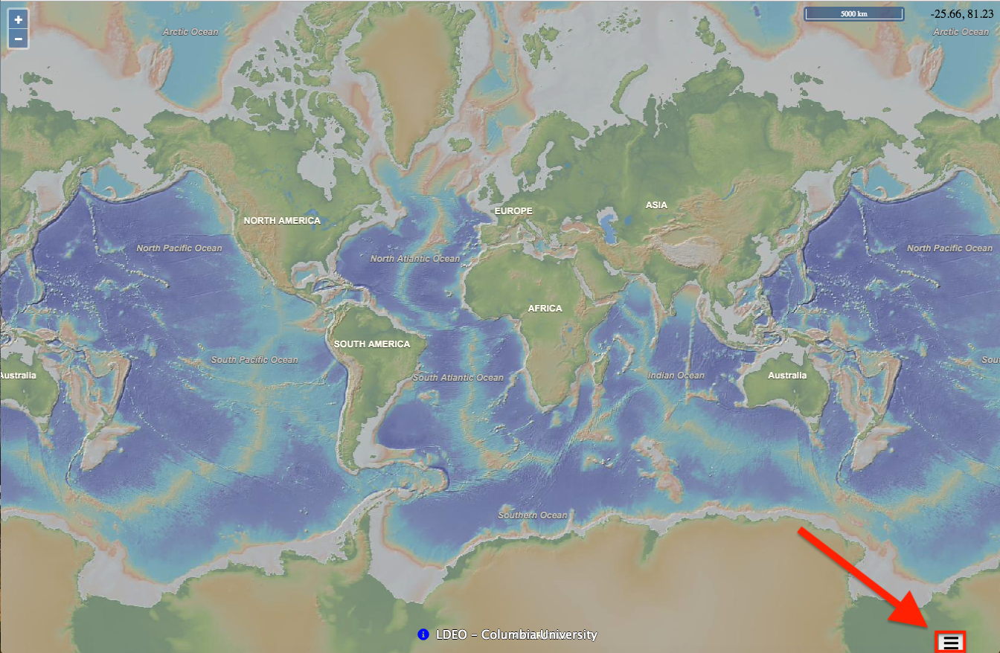
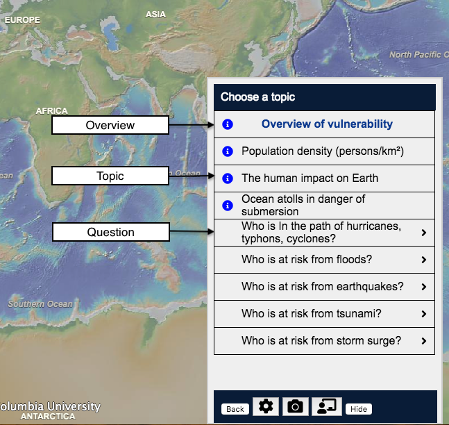
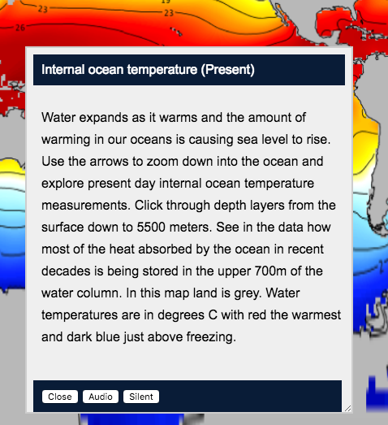
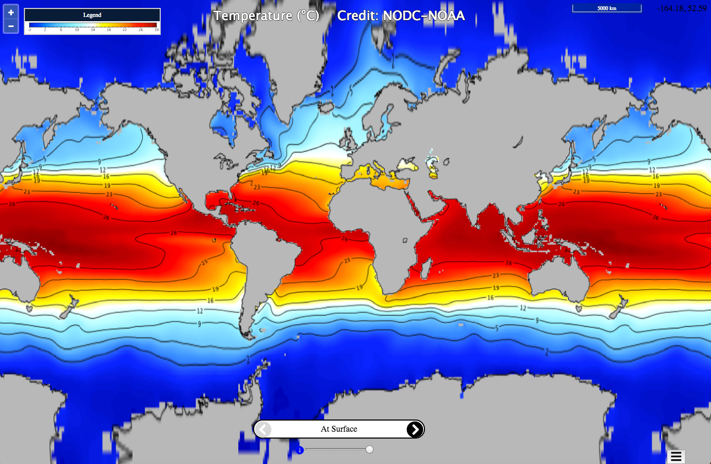
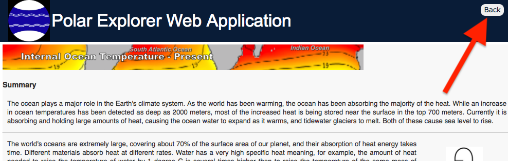
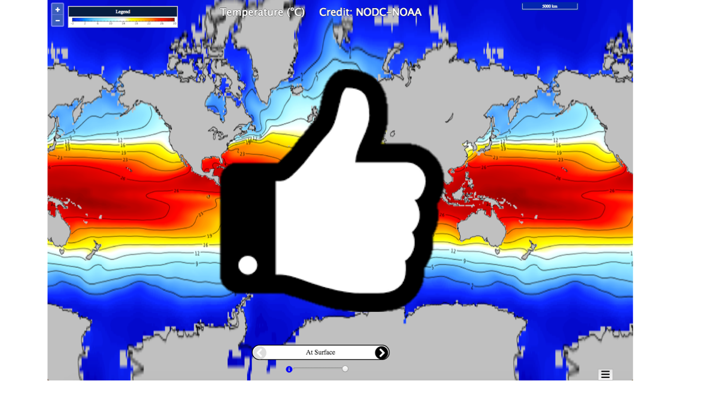

|  |
Polar Explorer Web Application Tutorial |
Welcome to the Polar Explorer Web Application! This map-based app will allow you to explore the many factors that contribute to sea level. Using this tutorial should send you on a smooth journey through the web app!
1Click the menu button at the bottom-right corner of the screen to access the array of items available |
2There are three types of cells in the menu:
You can move the menu window by holding down the left mouse button over the header at the top and dragging it to a new location. If you have a touch-sensitive screen, you can drag the menu window to a new location using your finger. Note: You cannot move the menu if you are using a smart phone. |
3Read the short description as an introduction to each topic's map. Select the 1 minute 'Audio' for more information. Click 'Silent' to stop the audio. Clicking 'Close' will close the description window. You can move the description window by holding down the left mouse button over the header at the top and dragging it to a new location. If you have a touch-sensitive screen, you can drag the description menu window to a new location using your finger. If you are using a smart phone, clicking 'Audio' will close the description window and display the map, whilst the audio is playing. Clicking 'Silent' will close the description window and display the map, without the audio playing. Clicking 'Cancel' will close the description window and return you to the menu, without displaying the map. Note: You cannot move the description window if you are using a smart phone. |
4Now you have a new map to explore. The maps are data visualizations. In exploring each map, click anywhere on the map to get the numeric value for that point. The range is displayed on the scale bar. |
Exiting A WebpageOnce you have finished using an information page, you can return to the main Polar Explorer window by clicking on its tab in your browser, or you can close the information page by clicking the back button in the top right hand corner. |
Congratulations!Now you are ready to explore the Polar Observer web app all by yourself! Hopefully, you will learn a lot and have fun doing it! |